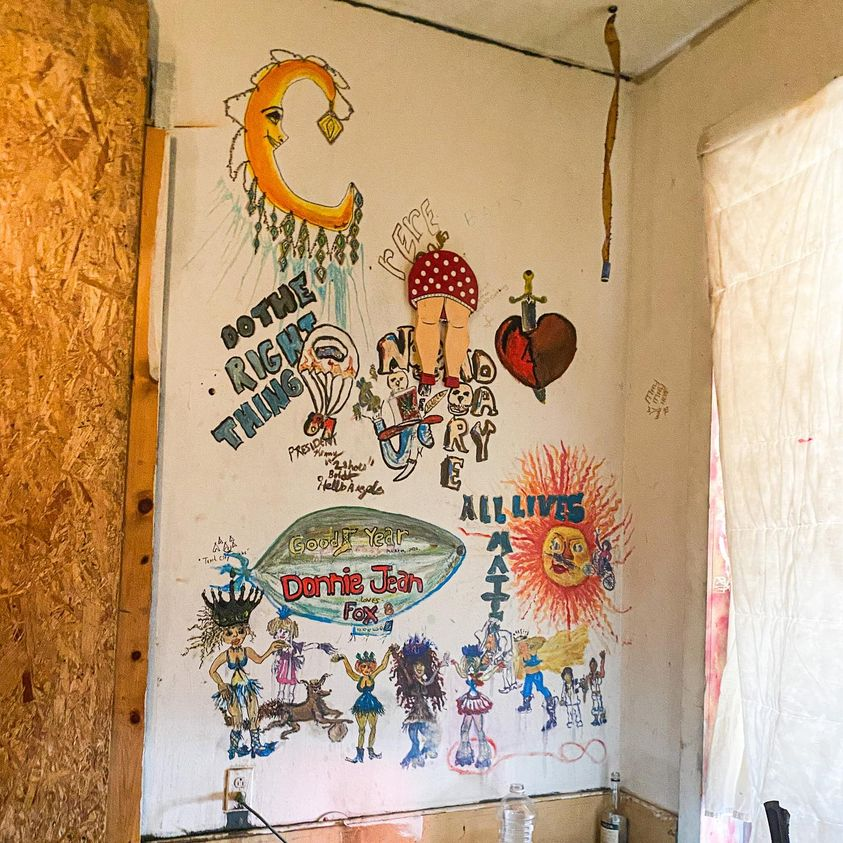

Timeline photos
This is a wall of art created by Donnie Jean. I’m a big fan of her work. I’ve bought several pieces of her work.
As far as I know, Donnie Jean is still in jail. Probably for drug possession. Drug possession is often what homeless people get picked up for.
I want to point out the “all lives matter” reference in this work. I hear it often in the homeless community by both Black and White people.
Some homeless people say All Lives Matter because they have friends and partners across race lines. They feel a deeper connection to their class than their race. (Don’t get me wrong, some of the most racist people I’ve ever met are also in the homeless community.) Donnie Jean does not have a racist bone in her body. She’s cool with everybody.
Donnie Jean’s husband died years ago. He had a pension from his job that went to Donnie Jean. They convinced her to take the one time buyout. She went through that money quick. Their paid-off house went into disrepair and got condemned. She’s pretty much been homeless ever since.
I’ve sheltered Donnie Jean in multiple tents, a tiny house and our actual house. I will have nothing for her when she gets out of jail.